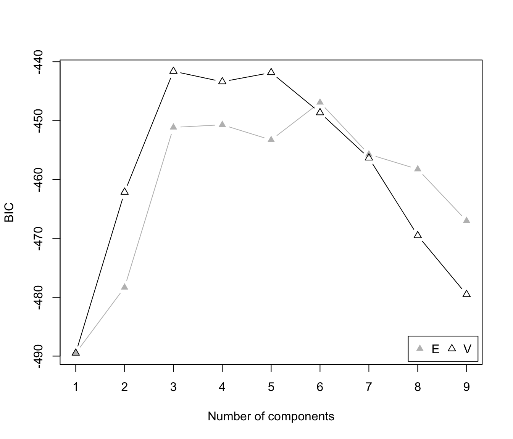

Update BIC values for parameterized Gaussian mixture models
mclustBICupdate.RdUpdate the BIC (Bayesian Information Criterion) for parameterized Gaussian
mixture models by taking the best from BIC results as returned by mclustBIC.
Arguments
- BIC
Object of class
'mclustBIC'containing the BIC values as returned by a call tomclustBIC.- ...
Further objects of class
'mclustBIC'to be merged.
Value
An object of class 'mclustBIC' containing the best values obtained from
merging the input arguments. Attributes are also updated according to the best
BIC found, so calling Mclust on the resulting ouput will return
the corresponding best model (see example).
Examples
# \donttest{
data(galaxies, package = "MASS")
galaxies <- galaxies / 1000
# use several random starting points
BIC <- NULL
for(j in 1:100)
{
rBIC <- mclustBIC(galaxies, verbose = FALSE,
initialization = list(hcPairs = hcRandomPairs(galaxies)))
BIC <- mclustBICupdate(BIC, rBIC)
}
pickBIC(BIC)
#> V,3 V,5 V,4
#> -441.6122 -441.8364 -443.3891
plot(BIC)

mod <- Mclust(galaxies, x = BIC)
summary(mod)
#> ----------------------------------------------------
#> Gaussian finite mixture model fitted by EM algorithm
#> ----------------------------------------------------
#>
#> Mclust V (univariate, unequal variance) model with 3 components:
#>
#> log-likelihood n df BIC ICL
#> -203.1792 82 8 -441.6122 -441.6126
#>
#> Clustering table:
#> 1 2 3
#> 72 7 3
# }